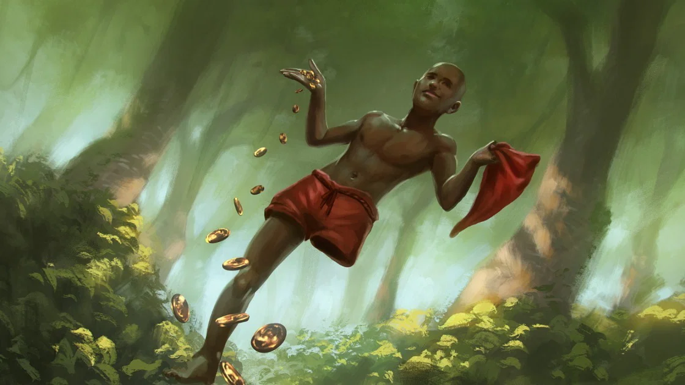
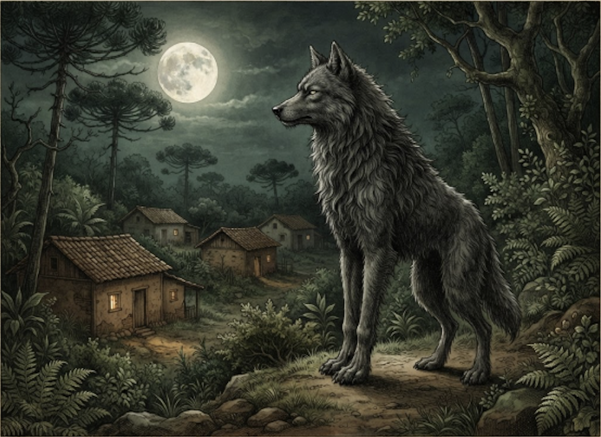
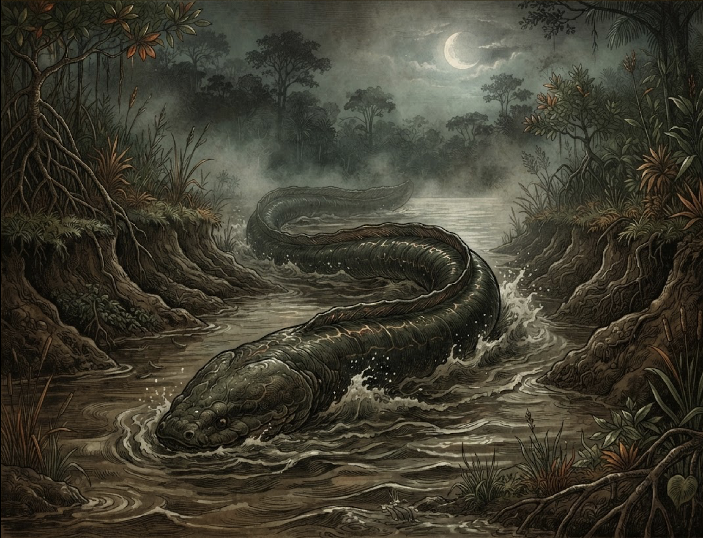

SUDESTE E SUL / FLORESTAS E ZONAS RURAIS
Saci
Um menino negro de uma perna só e gorro vermelho que adora pregar peças e criar redemoinhos de vento.
EXIBINDO SERES DO FOLCLORE BRASILEIRO DA REGIÃO SUL

Um menino negro de uma perna só e gorro vermelho que adora pregar peças e criar redemoinhos de vento.

Homem que se transforma em uma besta metade lobo e metade humano durante as noites de lua cheia.

Uma serpente ou minhoca gigantesca que habita o subsolo, escavando grandes galerias e derrubando barrancos de rios.